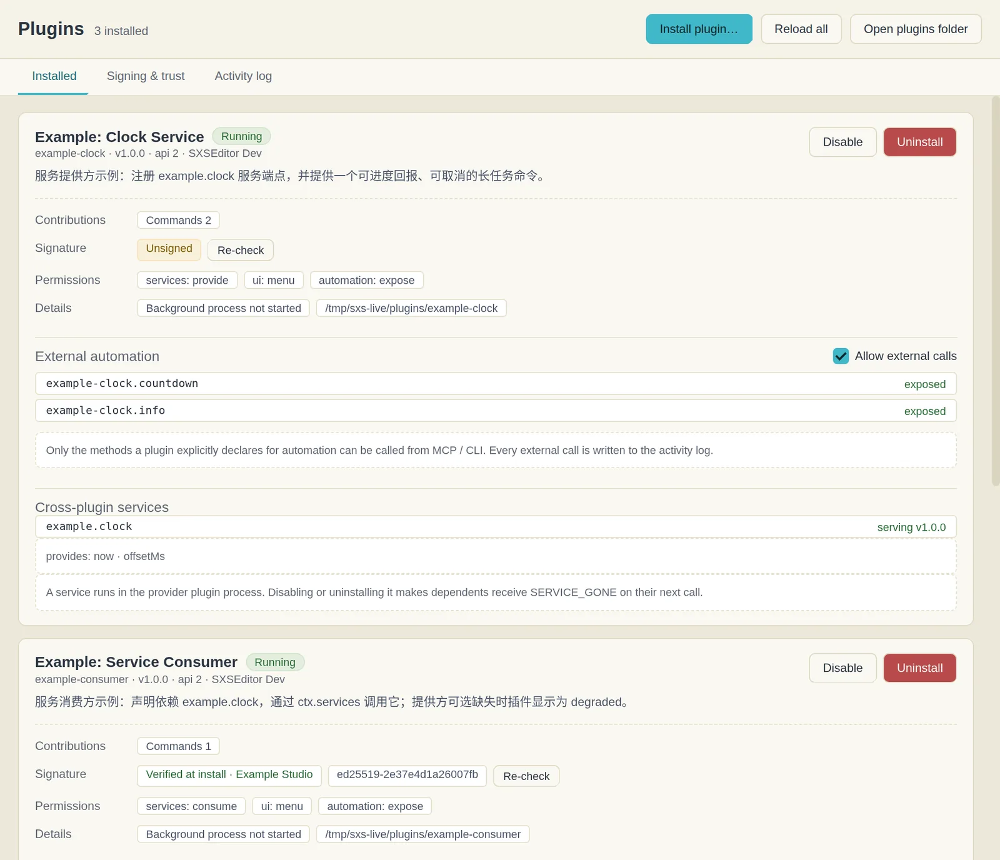
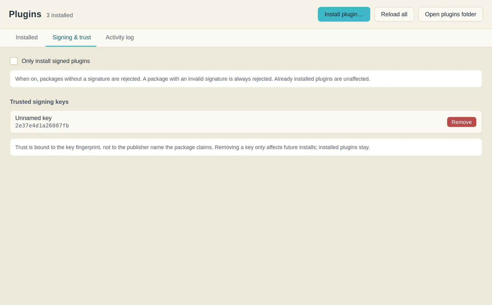
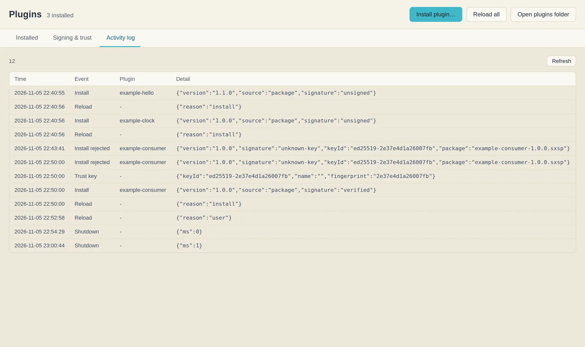
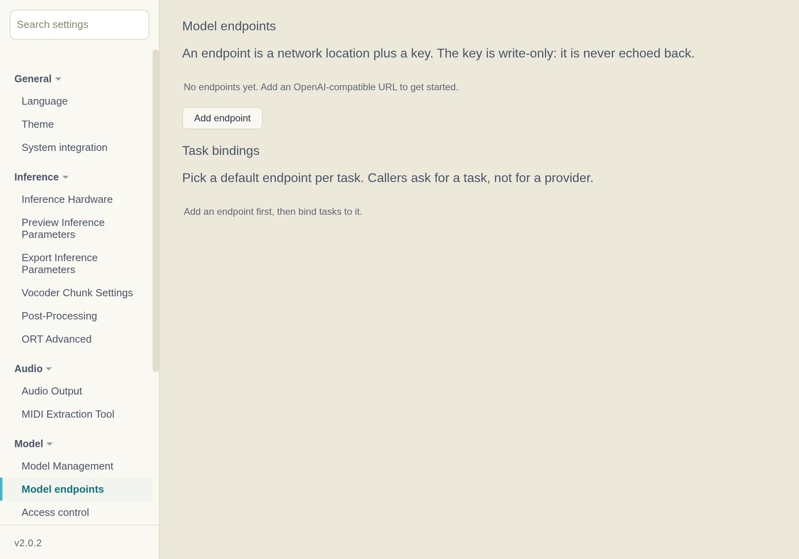

Plugins 插件
Plugins add capabilities that the built-in application does not provide: an alternative singing backend, extra commands, side panels, overlays, or access to a model endpoint you configured. All of them are managed in one place, the Plugins → Plugin Manager… window, where you can review what a plugin does before trusting it.
插件为 SXSEditor 增加内置功能之外的能力：另一种歌声后端、额外命令、侧边面板、浮层，或访问你配置的模型端点。这些能力统一由 插件 → 插件管理器… 管理，你可以在信任之前查看插件会做什么。
One official plugin ships with the application: VOCALOID / Synthesizer V Project Import, installed automatically on first launch. It opens and saves .vsqx, .vpr and .svp projects, appears in the Plugins window, and cannot be uninstalled. Any other plugin has to be added by you.
应用内置一个官方插件：VOCALOID / Synthesizer V 工程导入，首次启动时自动安装。它支持打开与保存 .vsqx、.vpr、.svp 工程，可在插件管理器中查看，且不可卸载。其余插件需自行添加。
When the application is updated, a built-in copy older than the bundled version is upgraded automatically; the disabled state and settings you chose are kept. A user-installed plugin with the same id is never overwritten.
应用升级时，若内置副本的版本低于随包版本会自动升级，并保留你设置的停用状态与配置；自行安装的同名插件不会被覆盖。
What a Plugin Can Do 插件能带来什么
| Kind类型 | What you see你会看到什么 |
|---|---|
| Singing backend歌声后端 | A new track kind in the Add Singer dialog. Tracks made with it are edited exactly like built-in ones and can be mixed into the same project.「添加歌手」里多出一种轨道。用它建的轨道与内置轨道编辑方式完全相同，可以混在同一个工程里。 |
| Commands命令 | Entries under the Plugins menu, toolbar buttons, status-bar items, context-menu items and keyboard shortcuts.插件菜单里的条目、工具栏按钮、状态栏项、右键菜单项与快捷键。 |
| Panels面板 | A docked panel with its own interface, plus optional timeline overlays drawn above the fragment lanes.一块带自己界面的停靠面板，以及可选的时间轴浮层（画在分片轨道上方）。 |
| Services服务 | Nothing directly — one plugin lends a capability to another. If the provider is disabled, the consumer shows degraded instead of silently misbehaving.你不会直接看到——一个插件把能力借给另一个。提供方被停用时，消费方会显示 degraded，而不是悄悄出错。 |
| Model access模型调用 | A command that talks to a model endpoint you configured in Settings. The plugin never holds your API key; the host sends the request.调用你在设置里配置的模型端点的命令。插件拿不到你的 API 密钥，请求由宿主代发。 |
Opening the Manager 打开插件管理器
Menu bar → Plugins → Manage Plugins…. Three tabs: Installed, Signing & trust, Activity log. The window stays open while you work; installing a plugin does not require a restart.
菜单栏 → 插件 → 插件管理器…。三个页签：已安装、签名与信任、活动日志。窗口开着也能继续用主界面；装完插件不需要重启。


Installing 安装
Two routes, same checks underneath.
两条路，底下是同一套检查。
From a file 从文件安装
- Click Install plugin… and pick a
.sxsppackage.点「安装插件…」，选一个.sxsp包。 - If the package is signed with a key you have not trusted yet, a banner appears with the publisher name and the key fingerprint. Nothing is written to disk at this point.如果包用的密钥你还没信任，会出现一条横幅，显示发布者名字与密钥指纹。此时磁盘上什么都没有写。
- Compare the fingerprint with what the author published. If it matches, choose Trust and install; otherwise close the banner.把指纹与作者公布的那串对照。一致就点「信任并安装」；不一致就关掉横幅。
- The card appears in the list, already running. No restart.卡片出现在列表里，已经在运行。不用重启。
From a market source 从市场源安装
A market source is just a URL to a JSON index. Adding one does not install anything; it only makes its packages searchable. Preview downloads the whole package and runs the same inspection as a file install — signature, permissions, path portability — then stops before writing. Installation is a separate click.
市场源就是一个指向 JSON 索引的网址。添加它不会安装任何东西，只是让里面的包可被搜索。预览会下载整包、跑与本地安装同一套检查（签名、权限、路径可移植性），然后在落盘前停下。安装是另一次点击。
The index is only the source's claim. The sha256 and size in it are recomputed from the downloaded file, but a source that misreports consistently can only be caught by the signature; that is why unsigned packages still require your confirmation.
索引只是源自身的声明。其中的 sha256 与大小会用下载到的文件重新计算，但一个始终虚报的源只能靠签名识别，因此未签名的包仍需你确认。
Signing & Trust 签名与信任
The second tab lists the keys you trust and the policy switch. Trust is stored per fingerprint, not per publisher name: the name inside a package is a string the author typed, while the fingerprint is derived from the public key that actually signed it.
第二个页签列出你信任的密钥和策略开关。信任按指纹记录，不按发布者名字：包里的名字是作者自己敲的字符串，指纹则由真正签名的那把公钥算出来。


Re-check on a card re-hashes the installed files and compares them with the checksums recorded at install time. Use it when you suspect a file was edited by hand — it reports which file differs, not just "failed".
卡片上的「重新校验」会重新计算已安装文件的哈希，与安装时记录的清单对比。怀疑有人手工改过文件时用它——它会指出是哪个文件不一样，而不只是「失败」。
Enabling, Disabling, Removing 启用、停用、卸载
| Action操作 | Effect效果 |
|---|---|
| Disable停用 | The plugin stops running immediately; its menu items, panel and commands disappear. Files and settings are kept, so enabling it again restores everything.插件立刻停止运行，菜单项、面板与命令一起消失。文件与设置保留，重新启用即恢复。 |
| Uninstall卸载 | Removes the plugin folder. You are asked whether to keep its data — settings, cached files, its own state. Keeping data means a reinstall finds its previous configuration.删除插件目录。会问你是否保留它的数据——设置、缓存文件、自己的状态。保留数据意味着重装后还能找回原来的配置。 |
Tracks that were created with a backend you later removed stay in the project and keep their notes, but they cannot be synthesised until that backend is installed again. The error names the missing plugin rather than silently falling back to the built-in model.
用某个后端建的轨道，在你卸载该后端后仍然留在工程里、音符也不会丢，但在重新装上之前无法合成。报错会指名缺哪个插件，不会静默回退到内置模型。
Reading the Activity Log 看活动日志
Every load, call, rejection and crash is recorded with an event name and JSON details. When an operation fails without a clear message, the log usually identifies the cause in a single line.
每次加载、调用、拒绝与崩溃都会记录事件名与 JSON 详情。操作失败且界面未给出明确原因时，日志通常能用一行指出问题。


unknown-key); after the key is trusted, the third entry reads signature: verified. Reading the sequence is usually faster than reinstalling.
被拒后重新信任。前两条记录是同一个包，因密钥未知被拒（unknown-key）；信任该密钥后，第三条显示 signature: verified。按顺序阅读这组记录通常比重新安装更快定位问题。
When Something Goes Wrong 出问题时
| Symptom现象 | Likely cause多半是 |
|---|---|
| "Install rejected" and no card appears提示安装被拒，列表没有新卡片 | Unknown key, broken signature, or a checksum mismatch. The log line names which one.密钥未知、签名损坏或校验和不符。日志那一行会说明是哪一种。 |
| Card shows Degraded卡片显示降级 | A service it depends on is missing or disabled. The card lists the dependency; enable the provider.它依赖的服务缺失或被停用。卡片上列出了依赖项，去启用提供方。 |
| Card shows Crashed or Quarantined卡片显示已崩溃或已隔离 | The plugin threw during load or a call. Quarantine is deliberate: it will not be started again automatically until you reload.插件在加载或调用时抛了异常。隔离是刻意的：在你手动重新加载之前，它不会被自动拉起。 |
| Synthesis produces silence合成出来是静音 | Usually a parameter or voice-bank problem rather than a crash. Check the plugin's own settings first.多半是参数或音色库问题，而不是崩溃。先看插件自己的设置。 |
| A command is missing from the menu菜单里少了某个命令 | The plugin is disabled, or it only declares the command for automation (visible to MCP and the CLI, not to the menu).插件被停用了，或那条命令只声明给自动化用（MCP 与 CLI 看得见，菜单里没有）。 |
| Opening an .svp project warns "no plugin can save .svp"打开 .svp 工程后提示「没有插件可以保存 .svp」 | An older bundled copy of the official plugin lacked save support. It is now upgraded by version on startup — no manual action is needed. A repeated auto-save failure with the same cause is reported only once until the project is saved or replaced.早期随包内置的官方插件旧副本缺少保存能力，现在会在启动时按版本自动升级，无需手动处理。同一原因反复触发的自动保存失败只提示一次，直到工程保存成功或被替换。 |
Using MCP to Reach a Model 用 MCP 接入模型
Writing a plugin is one way to bring a model into your workflow, but it is rarely the shortest. If the goal is to drive the editor from an assistant and call a model along the way, MCP is the recommended route: configure the endpoint once in Settings, and any MCP-capable client can then call it through the running application, with no code, packaging or installation.
编写插件是把模型接入工作流的一种方式，但通常不是最短路径。如果目标是让常用助手驱动编辑器并调用模型，推荐使用 MCP：端点只需在设置中配置一次，之后任何支持 MCP 的客户端都能通过正在运行的应用调用它，无需编写代码、打包或安装。
Step 1 — Add an endpoint 第一步：添加端点
Settings → Model → Model endpoints → Add endpoint. Paste an OpenAI-compatible base URL and the key. The key is write-only: once saved it is never shown again, only its presence is reported. Then, under Task bindings, choose which endpoint answers each task (chat, tts, singing, …). A task with no binding fails with a message telling you to bind one — the application never picks an endpoint for you.
设置 → 模型 → 模型端点 → 添加端点。填 OpenAI 兼容的 Base URL 与密钥。密钥是只写的：保存后不再显示，只报告「是否已配置」。然后在任务绑定里为每个 task（chat、tts、singing…）指定端点。没有绑定的 task 会直接报错并提示去绑定——应用不会替你挑一个。


Step 2 — Connect a client 第二步：接上客户端
Help → MCP Connection… generates a ready-to-copy set of instructions using the paths detected on your installation: the configuration block for each client, the companion skill and the verification steps. Paste it into your AI assistant and let it complete the setup. Start SXSEditor first — the stdio server reads the discovery file written by the running application, so no port or token needs to be copied.
帮助 → MCP 连接… 会按当前安装的实际路径生成一段可复制的说明，内含各客户端的配置片段、配套 skill 与验证步骤，把它粘贴给正在使用的 AI 助手即可完成配置。请先启动 SXSEditor：stdio 服务器会自行读取应用写下的发现文件，不需要抄端口或令牌。
The server file is <install>/resources/mcp/sxseditor-mcp.js in a packaged build, or <repo>/mcp/sxseditor-mcp.js when running from source. Paths must be absolute. The four clients use different configuration shapes — do not paste one client's block into another:
安装包中服务器文件位于 <安装目录>/resources/mcp/sxseditor-mcp.js，源码运行时位于 <仓库>/mcp/sxseditor-mcp.js，配置里必须使用绝对路径。四种客户端的配置格式各不相同，不要把某一端的片段照抄到另一端：
| Client客户端 | Config file配置文件 | Shape格式要点 |
|---|---|---|
| Claude Code | .mcp.json / ~/.claude.json |
mcpServers with command and args; or claude mcp add --transport stdio.mcpServers 配 command / args；也可用 claude mcp add --transport stdio。 |
| WorkBuddy / CodeBuddy | ~/.workbuddy/mcp.json |
Same mcpServers shape; the connector must be trusted before it connects.同为 mcpServers；需在连接器管理页先「信任」该服务器。 |
| OpenCode | opencode.json |
mcp.<name>.command is an array, with type: "local" and enabled: true.mcp.<名称>.command 是数组，需 type: "local" 与 enabled: true。 |
| Codex | ~/.codex/config.toml |
TOML [mcp_servers.*] table, not JSON; raise tool_timeout_sec for long exports.TOML 的 [mcp_servers.*] 表，不是 JSON；长导出需放宽 tool_timeout_sec。 |
The companion skill (skills/mcp-driver/SKILL.md) is copied into the client's skill directory, for example .claude/skills/ or .codebuddy/skills/. OpenCode and Codex have no unified skill directory; merge the file into the project instructions instead.
配套 skill（skills/mcp-driver/SKILL.md）放到客户端的 skill 目录，例如 .claude/skills/ 或 .codebuddy/skills/；OpenCode 与 Codex 没有统一的 skill 目录，可把内容并入项目指令文件。
Restart the client afterwards and verify with sxs_capabilities and sxs_schema_get. The client then exposes one tool per automation method, plus aliases, covering projects, editing, playback, export, settings, windows and model calls.
随后重启客户端，用 sxs_capabilities 与 sxs_schema_get 验证连接。连接成功后，客户端会为每个自动化方法提供一个工具（另含别名），覆盖工程、编辑、播放、导出、设置、窗口与模型调用。
Step 3 — Ask for the work, not for the tool 第三步：说要做的事，而不是说工具名
Once connected, a request such as "change the lyrics of the second fragment to English, then export a WAV" is sufficient: the client reads the schema, calls project.get, modifies the project with project.apply, then calls audio.exportTo. Model calls go through model.invoke, using the endpoint bound in the first step, with a confirmation on first use.
连接后，直接提出「把第二段歌词改成英文，然后导出 WAV」这类请求即可：客户端会读取 schema，调用 project.get，用 project.apply 修改工程，再调用 audio.exportTo。模型调用通过 model.invoke 使用第一步绑定的端点，并在首次调用时向你确认。
MCP or a plugin? MCP 还是写插件？
| MCPMCP | Plugin插件 | |
|---|---|---|
| Who it is for适合谁 | You, driving the editor from an assistant or a script你自己，用助手或脚本驱动编辑器 | You have something the editor should gain for everyone你有一样东西，应该让编辑器本身具备 |
| Interface界面 | None; the client's chat is the interface无独立界面，由客户端对话承载 | Menu items, panels, toolbars, track kinds菜单、面板、工具栏、轨道种类 |
| Model access模型访问 | model.invoke with the binding you configuredmodel.invoke，用你配置的绑定 |
ctx.models — same endpoints, same consentctx.models——同一批端点，同一套确认 |
| Cost to start上手成本 | One config block一段配置 | A manifest, code, packaging, and a signature if you distribute itmanifest、代码、打包，要分发还得签名 |
Install plugins only from sources you trust. A plugin is code that runs on your machine with the application's own access; the permission list tells you what it declared, not what it is capable of in the abstract. If a card asks for permissions that make no sense for what it claims to do, do not install it.
只安装来自可信来源的插件。插件是跑在你机器上的代码，拥有与应用同等的访问能力；权限列表告诉你它声明了什么，而不是它理论上能做到什么。如果一张卡片要的权限和它自称的功能对不上，就别装。
Building one yourself? Start with Writing a Plugin in the developer guide.
想自己写一个？从开发者指南的编写插件开始。